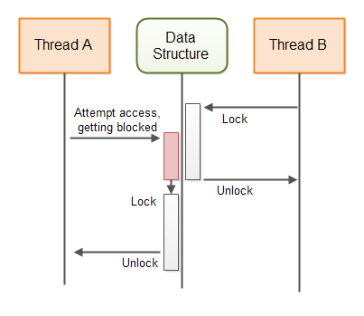
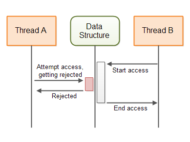
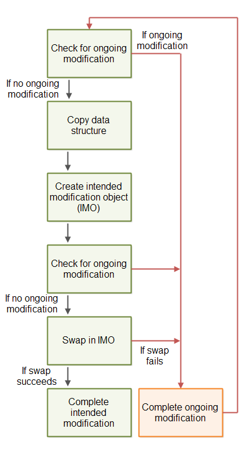
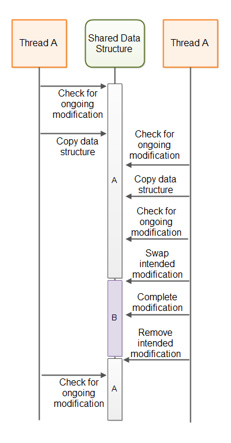

- Java Concurrency / Multithreading Tutorial
- Multithreading Benefits
- Multithreading Costs
- Concurrency Models
- Same-threading
- Concurrency vs. Parallelism
- Creating and Starting Java Threads
- Race Conditions and Critical Sections
- Thread Safety and Shared Resources
- Thread Safety and Immutability
- Java Memory Model
- Java Synchronized Blocks
- Java Volatile Keyword
- Java ThreadLocal
- Thread Signaling
- Deadlock
- Deadlock Prevention
- Starvation and Fairness
- Nested Monitor Lockout
- Slipped Conditions
- Locks in Java
- Read / Write Locks in Java
- Reentrance Lockout
- Semaphores
- Blocking Queues
- Thread Pools
- Compare and Swap
- Anatomy of a Synchronizer
- Non-blocking Algorithms
- Amdahl's Law
- Java Concurrency References
Non-blocking Algorithms
- Blocking Concurrency Algorithms
- Non-blocking Concurrency Algorithms
- Non-blocking vs Blocking Algorithms
- Non-blocking Concurrent Data Structures
- Volatile Variables
- Optimistic Locking With Compare and Swap
- Non-swappable Data Structures
- The A-B-A Problem
- A Non-blocking Algorithm Template
- Non-blocking Algorithms are Difficult to Implement
- The Benefit of Non-blocking Algorithms
Jakob Jenkov |
Non-blocking algorithms in the context of concurrency are algorithms that allows threads to access shared state (or otherwise collaborate or communicate) without blocking the threads involved. In more general terms, an algorithm is said to be non-blocking if the suspension of one thread cannot lead to the suspension of other threads involved in the algorithm.
To better understand the difference between blocking and non-blocking concurrency algorithms, I will start by explaining blocking algorithms and then continue with non-blocking algorithms.
Blocking Concurrency Algorithms
A blocking concurrency algorithm is an algorithm which either:
- A: Performs the action requested by the thread - OR
- B: Blocks the thread until the action can be performed safely
Many types of algorithms and concurrent data structures are blocking. For instance, the different implementations
of the java.util.concurrent.BlockingQueue interface are
all blocking data structures. If a thread attempts to insert an element into a BlockingQueue and
the queue does not have space, the inserting thread is blocked (suspended) until the BlockingQueue
has space for the new element.
This diagram illustrates the behaviour of a blocking algorithm guarding a shared data structure:
Non-blocking Concurrency Algorithms
A non-blocking concurrency algorithm is an algorithm which either:
- A: Performs the action requested by the thread - OR
- B: Notifies the requesting thread that the action could not be performed
Java contains several non-blocking data structures too. The AtomicBoolean, AtomicInteger, AtomicLong and AtomicReference are all examples of non-blocking data structures.
This diagram illustrates the behaviour of a non-blocking algorithm guarding a shared data structure:
Non-blocking vs Blocking Algorithms
The main difference between blocking and non-blocking algorithms lies in the second step of their behaviour as described in the above two sections. In other words, the difference lies in what the blocking and non-blocking algorithms do when the requested action cannot be performed:
Blocking algorithms block the thread until the requested action can be performed. Non-blocking algorithms notify the thread requesting the action that the action cannot be performed.
With a blocking algorithm a thread may become blocked until it is possible to perform the requested action. Usually it will be the actions of another thread that makes it possible for the first thread to perform the requested action. If for some reason that other thread is suspended (blocked) somewhere else in the application, and thus cannot perform the action that makes the first thread's requested action possible, the first thread remains blocked - either indefinitely, or until the other thread finally performs the necessary action.
For instance, if a thread tries to insert an element into a full BlockingQueue the thread will block
until another thread has taken an element from the BlockingQueue.
If for some reason the thread that is supposed to take elements from the BlockingQueue is blocked
(suspended) somewhere else in the application, the thread trying to insert the new element remains blocked -
either indefinitely, or until the thread taking elements finally takes an element from the BlockingQueue.
Non-blocking Concurrent Data Structures
In a multithreaded system, threads usually communicate via some kind of data structure. Such data structures can be anything from simple variables to more advanced data structures like queues, maps, stacks etc. To facilitate correct, concurrent access to the data structures by multiple threads, the data structures must be guarded by some concurrent algorithm. The guarding algorithm is what makes the data structure a concurrent data structure.
If the algorithm guarding a concurrent data structure is blocking (uses thread suspension), it is said to be a blocking algorithm. The data structure is thus said to be a blocking, concurrent data structure.
If the algorithm guarding a concurrent data structure is non-blocking, it is said to be a non-blocking algorithm. The data structure is thus said to be a non-blocking, concurrent data structure.
Each concurrent data structure is designed to support a certain method of communication. Which concurrent data structure you can use thus depends on your communication needs. I will cover some non-blocking concurrent data structures in the following sections, and explain in what situations they can be used. The explanation of how these non-blocking data structures work should give you an idea about how non-blocking data structures can be designed and implemented.
Volatile Variables
Java volatile variables are variables that are always read directly from main memory. When a new value is assigned to a volatile variable the value is always written immediately to main memory. This guarantees that the latest value of a volatile variable is always visible to other threads running on other CPUs. Other threads will read the value of the volatile from main memory every time, instead of from e.g. the CPU cache of the CPU the threads are running on.
Volatile variables are non-blocking. The writing of a value to a volatile variable is an atomic operation. It cannot be interrupted. However, a read-update-write sequence performed on a volatile variable is not atomic. Thus, this code may still lead to race conditions if performed by more than one thread:
volatile myVar = 0; ... int temp = myVar; temp++; myVar = temp;
First the value of the volatile variable myVar is read from main memory into a temp variable. Then the
temp variable is incremented by 1. Then the value of the temp variable is assigned to the volatile myVar
variable which means it will be written back to main memory.
If two threads execute this code and both of them read the value of myVar, add one to it and write
the value back to main memory, then you risk that instead of 2 being added to the myVar variable,
only 1 will be added (e.g. both threads read the value 19, increment to 20, and write 20 back).
You might think you won't write code like above, but in practice the above code is equivalent to this:
myVar++;
When executed, the value of myVar is read into a
CPU register or the local CPU cache, one is added, and then the value from the CPU register or CPU cache is written
back to main memory.
The Single Writer Case
In some cases you only have a single thread writing to a shared variable, and multiple threads reading the value of that variable. No race conditions can occur when only a single thread is updating a variable, no matter how many threads are reading it. Therefore, whenever you have only a single writer of a shared variable you can use a volatile variable.
The race conditions occur when multiple threads perform a read-update-write sequence of operations on a shared variable. If you only have one thread perform a read-update-write sequence of operations, and all other threads only perform a read operation, you have no race conditions.
Here is a single writer counter which does not use synchronization but is still concurrent:
public class SingleWriterCounter {
private volatile long count = 0;
/**
* Only one thread may ever call this method,
* or it will lead to race conditions.
*/
public void inc() {
this.count++;
}
/**
* Many reading threads may call this method
* @return
*/
public long count() {
return this.count;
}
}
Multiple threads can access the same instance of this counter, as long as only one thread calls inc().
And I don't mean one thread at a time. I mean, only the same, single thread is ever allowed to call inc().
Multiple threads can call count(). This will not cause any race conditions.
This diagram illustrates how the threads would access the volatile count variable:
More Advanced Data Structures Based on Volatile Variables
It is possible to create data structures that use combinations of volatile variables, where each volatile variable is only written by a single thread, and read by multiple threads. Each volatile variable may be written by a different thread (but only one thread). Using such a data structure multiple threads may be able to send information to each other in a non-blocking way, using the volatile variables.
Here is a simple double writer counter class that shows how that could look:
public class DoubleWriterCounter {
private volatile long countA = 0;
private volatile long countB = 0;
/**
* Only one (and the same from thereon) thread may ever call this method,
* or it will lead to race conditions.
*/
public void incA() { this.countA++; }
/**
* Only one (and the same from thereon) thread may ever call this method,
* or it will lead to race conditions.
*/
public void incB() { this.countB++; }
/**
* Many reading threads may call this method
*/
public long countA() { return this.countA; }
/**
* Many reading threads may call this method
*/
public long countB() { return this.countB; }
}
As you can see, the DoubleWriterCounter now contains two volatile variables, and two pairs of incrementation
and read methods. Only a single thread may ever call incA(), and only a single thread may ever call
incB(). It can be different threads calling incA() and incB() though.
Many threads are allowed to call countA() and countB(). This will not cause race conditions.
The DoubleWriterCounter can be used for e.g. two threads communicating. The two counts could be
tasks produced and tasks consumed. This diagram shows two thread communicating via a data structure similar to
the above:
The smart reader will recognize that you could have achieved the effect of the DoubleWriterCounter
by using two SingleWriterCounter instances. You could even have used more threads and
SingleWriterCounter instances if you needed to.
Optimistic Locking With Compare and Swap
If you really need more than one thread to write to the same, shared variable, a volatile variable will not be sufficient. You will need some kind of exclusive access to the variable. This is how such exclusive access could look using a synchronized block in Java:
public class SynchronizedCounter {
long count = 0;
public void inc() {
synchronized(this) {
count++;
}
}
public long count() {
synchronized(this) {
return this.count;
}
}
}
Notice how the inc() and count() methods both contain a synchronized block. This is what
we want to avoid - synchronized blocks and wait() - notify() calls etc.
Instead of the two synchronized blocks we can use one of Java's atomic variables. In this case the AtomicLong.
Here is how the same counter class could look using an AtomicLong instead:
import java.util.concurrent.atomic.AtomicLong;
public class AtomicCounter {
private AtomicLong count = new AtomicLong(0);
public void inc() {
boolean updated = false;
while(!updated){
long prevCount = this.count.get();
updated = this.count.compareAndSet(prevCount, prevCount + 1);
}
}
public long count() {
return this.count.get();
}
}
This version is just as thread-safe as the previous version. What is interesting about this version is the
implementation of the inc() method. The inc() method no longer contains a synchronized
block. Instead it contains these lines:
boolean updated = false;
while(!updated){
long prevCount = this.count.get();
updated = this.count.compareAndSet(prevCount, prevCount + 1);
}
These lines are not an atomic operation. That means, that it is possible for two different threads to call
the inc() method and execute the long prevCount = this.count.get() statement, and thus
both obtain the previous count for the counter. Yet, the above code does not contain any race conditions.
The secret is in the second of the two lines inside the while loop. The compareAndSet()
method call is an atomic operation. It compares the internal value of the AtomicLong to an expected
value, and if the two values are equal, sets a new internal value for the AtomicLong. The
compareAndSet() method is typically supported by compare-and-swap instructions directly in the CPU.
Therefore no synchronization is necessary, and no thread suspension is necessary. This saves the thread suspension
overhead.
Imagine that the internal value of the AtomicLong is 20. Then two threads read that value, and both
tries to call compareAndSet(20, 20 + 1). Since compareAndSet() is an atomic operation,
the threads will execute this method sequentially (one at a time).
The first thread will compare the expected
value of 20 (the previous value of the counter) to the internal value of the AtomicLong. Since the
two values are equal, the AtomicLong will update its internal value to 21 (20 + 1). The
updated variable will be set to true and the while loop will stop.
Now the second thread calls compareAndSet(20, 20 + 1). Since the internal value of the AtomicLong
is no longer 20, this call will fail. The internal value of the AtomicLong will not be set to 21.
The updated variable will be set to false, and the thread will spin one more time around
the while loop. This time it will read the value 21 and attempt to update it to 22. If no other thread has called
inc() in the meantime, the second iteration will succeed in updating the AtomicLong to
22.
Why is it Called Optimistic Locking?
The code shown in the previous section is called optimistic locking. Optimistic locking is different from traditional locking, sometimes also called pessimistic locking. Traditional locking blocks the access to the shared memory with a synchronized block or a lock of some kind. A synchronized block or lock may result in threads being suspended.
Optimistic locking allows all threads to create a copy of the shared memory without any blocking. The threads may then make modifications to their copy, and attempt to write their modified version back into the shared memory. If no other thread has made any modifications to the shared memory, the compare-and-swap operation allows the thread to write its changes to shared memory. If another thread has already changed the shared memory, the thread will have to obtain a new copy, make its changes and attempt to write them to shared memory again.
The reason this is called optimistic locking is that threads obtain a copy of the data they want to change and apply their changes, under the optimistic assumption that no other thread will have made changes to the shared memory in the meantime. When this optimistic assumption holds true, the thread just managed to update shared memory without locking. When this assumption is false, the work was wasted, but still no locking was applied.
Optimistic locking tends to work best with low to medium contention on the shared memory. If the content is very high on the shared memory, threads will waste a lot of CPU cycles copying and modifying the shared memory only to fail writing the changes back to the shared memory. But, if you have a lot of content on shared memory, you should anyways consider redesigning your code to lower the contention.
Optimistic Locking is Non-blocking
The optimistic locking mechanism I have shown here is non-blocking. If a thread obtains a copy of the shared memory and gets blocked (for whatever reason) while trying to modify it, no other threads are blocked from accessing the shared memory.
With a traditional lock / unlock paradigm, when a thread locks a lock - that lock remains locked for all other threads until the thread owning the lock unlocks it again. If the thread that locked the lock is blocked somewhere else, that lock remains locked for a very long time - maybe even indefinitely.
Non-swappable Data Structures
The simple compare-and-swap optimistic locking works for shared data structures where the whole data structure can be swapped (exchanged) with a new data structure in a single compare-and-swap operation. Swapping the whole data structure with a modified copy may not always be possible or feasible, though.
Imagine if the shared data structure is a queue. Each thread trying to either insert or take elements from the
queue would have to copy the whole queue and make the desired modifications to the copy. This could be achieved via
an AtomicReference. Copy the reference, copy and modify the queue, and try to swap the reference pointed
to in the AtomicReference to the newly created queue.
However, a big data structure may require a lot of memory and CPU cycles to copy. This will make your application spend a lot more memory, and waste a lot of time on the copying. This will impact the performance of your application, especially if contention on the data structure is high. Furthermore, the longer time it takes for a thread to copy and modify the data structure, the bigger the probability is that some other thread will have modified the data structure in between. As you know, if another thread has modified the shared data structure since it was copied, all other threads have to restart their copy-modify operations. This will increase the impact on performance and memory consumption even more.
The next section will explain a method to implement non-blocking data structures which can be updated concurrently, not just copied and modified.
Sharing Intended Modifications
Instead of copying and modifying the whole shared data structure, a thread can share its intended modification of the shared data structure. The process for a thread wanting to make a modification to the shared data structure then becomes:
- Check if another thread has submitted an intended modification to the data structure.
- If no other thread has submitted an intended modification, create an intended modification (represented by an object) and submit that intended modification to the data structure (using a compare-and-swap operation).
- Carry out the modification of the shared data structure.
- Remove the reference to the intended modification to signal to other threads that the intended modification has been carried out.
As you can see, the second step can block other threads from submitting an intended modification. Thus, the second step effectively works as a lock of the shared data structure. If one thread successfully submits an intended modification, no other thread can submit an intended modification until the first intended modification is carried out.
If a thread submits an intended modification and then gets blocked doing some other work, the shared data structure is effectively locked. The shared data structure does not directly block the other threads using the data structure. The other threads can detect that they cannot submit an intended modification and decide to something else. Obviously, we need to fix that.
Completable Intended Modifications
To avoid that a submitted intended modification can lock the shared data structure, a submitted intended modification object must contain enough information for another thread to complete the modification. Thus, if the thread submitting the intended modification never completes the modification, another thread can complete the modification on its behalf, and keep the shared data structure available for other threads to use.
Here is a diagram illustrating the blueprint of the above described non-blocking algorithm:
The modifications must be carried out as one or more compare-and-swap operations. Thus, if two threads try to complete the intended modification, only one thread will be able to carry out any of the compare-and-swap operations. As soon as a compare-and-swap operation has been completed, further attempts to complete that compare-and-swap operation will fail.
The A-B-A Problem
The above illustrated algorithm can suffer from the A-B-A problem. The A-B-A problem refers to the situation where a variable is changed from A to B and then back to A again. For another thread it is thus not possible to detect that the variable was indeed changed.
If thread A checks for ongoing updates, copies data and is suspended by the thread scheduler, a thread B may be able to access the shared data structure in the meanwhile. If thread B performs a full update of the data structure, and removes its intended modification, it will look to thread A as if no modification has taken place since it copied the data structure. However, a modification did take place. When thread A continues to perform its update based on its now out-of-date copy of the data structure, the data structure will have thread B's modification undone.
The following diagram illustrates A-B-A problem from the above situation:
A-B-A Solutions
A common solution to the A-B-A problem is to not just swap a pointer to an intended modification object, but to combine the pointer with a counter, and swap pointer + counter using a single compare-and-swap operation. This is possible in languages that support pointers like C and C++. Thus, even if the current modification pointer is set back to point to "no ongoing modification", the counter part of the pointer + counter will have been incremented, making the update visible to other threads.
In Java you cannot merge a reference and a counter together into a single variable. Instead Java provides
the AtomicStampedReference class
which can swap a reference and a stamp atomically using a compare-and-swap operation.
A Non-blocking Algorithm Template
Below is a code template intended to give you an idea about how non-blocking algorithms are implemented. The template is based on the descriptions given earlier in this tutorial.
NOTE: I am not an expert in non-blocking algorithms, so the template below probably has some errors. Do not base your own non-blocking algorithm implementation on my template. The template is only intended to give you an idea of how the code for a non-blocking algorithm could look. If you want to implement your own non-blocking algorithms, study some real, working non-blocking algorithm implementations first, to learn more about how they are implemented in practice.
import java.util.concurrent.atomic.AtomicBoolean;
import java.util.concurrent.atomic.AtomicStampedReference;
public class NonblockingTemplate {
public static class IntendedModification {
public AtomicBoolean completed =
new AtomicBoolean(false);
}
private AtomicStampedReference<IntendedModification>
ongoingMod =
new AtomicStampedReference<IntendedModification>(null, 0);
//declare the state of the data structure here.
public void modify() {
while(!attemptModifyASR());
}
public boolean attemptModifyASR(){
boolean modified = false;
IntendedModification currentlyOngoingMod =
ongoingMod.getReference();
int stamp = ongoingMod.getStamp();
if(currentlyOngoingMod == null){
//copy data structure state - for use
//in intended modification
//prepare intended modification
IntendedModification newMod =
new IntendedModification();
boolean modSubmitted =
ongoingMod.compareAndSet(null, newMod, stamp, stamp + 1);
if(modSubmitted){
//complete modification via a series of compare-and-swap operations.
//note: other threads may assist in completing the compare-and-swap
// operations, so some CAS may fail
modified = true;
}
} else {
//attempt to complete ongoing modification, so the data structure is freed up
//to allow access from this thread.
modified = false;
}
return modified;
}
}
Non-blocking Algorithms are Difficult to Implement
Non-blocking algorithms are hard to design and implement correctly. Before attempting to implement your own non-blocking algorithms, see if there is not someone who has already developed a non-blocking algorithm for your needs.
Java already comes with a few non-blocking implementations (e.g. ConcurrentLinkedQueue) and
will most likely get more non-blocking algorithm implementations in future Java versions.
In addition to Java's built-in non-blocking data structures there are also some open source non-blocking data structures you can use. For instance, the LMAX Disrupter (a queue-like data structure), and the non-blocking HashMap from Cliff Click. See my Java concurrency references page for links to more resources.
The Benefit of Non-blocking Algorithms
There are several benefits of non-blocking algorithms compared to blocking algorithms. This section will describe these benefits.
Choice
The first benefit of non-blocking algorithms is, that threads are given a choice about what to do when their requested action cannot be performed. Instead of just being blocked, the request thread has a choice about what to do. Sometimes there is nothing a thread can do. In that case it can choose to block or wait itself, thus freeing up the CPU for other tasks. But at least the requesting thread is given a choice.
On a single CPU system perhaps it makes sense to suspend a thread that cannot perform a desired action, and let other threads which can perform their work run on the CPU. But even on a single CPU system blocking algorithms may lead to problems like deadlock, starvation and other concurrency problems.
No Deadlocks
The second benefit of non-blocking algorithms is, that the suspension of one thread cannot lead to the suspension of other threads. This means that deadlock cannot occur. Two threads cannot be blocked waiting for each other to release a lock they want. Since threads are not blocked when they cannot perform their requested action, they cannot be blocked waiting for each other. Non-blocking algorithms may still result in live lock, where two threads keep attempting some action, but keep being told that it is not possible (because of the actions of the other thread).
No Thread Suspension
Suspending and reactivating a thread is costly. Yes, the costs of suspension and reactivation has gone down over time as operating systems and thread libraries become more efficient. However, there is still a high price to pay for thread suspension and reactivation.
Whenever a thread is blocked it is suspended, thus incurring the overhead of thread suspension and reactivation. Since threads are not suspended by non-blocking algorithms, this overhead does not occur. This means that the CPUs can potentially spend more time performing actual business logic instead of context switching.
On a multi CPU system blocking algorithms can have more significant impact on the overall performance. A thread running on CPU A can be blocked waiting for a thread running on CPU B. This lowers the level of parallelism the application is capable of achieving. Of course, CPU A could just schedule another thread to run, but suspending and activating threads (context switches) are expensive. The less threads need to be suspended the better.
Reduced Thread Latency
Latency in this context means the time between a requested action becomes possible and the thread actually performs it. Since threads are not suspended in non-blocking algorithms they do not have to pay the expensive, slow reactivation overhead. That means that when a requested action becomes possible threads can respond faster and thus reduce their response latency.
The non-blocking algorithms often obtain the lower latency by busy-waiting until the requested action becomes possible. Of course, in a system with high thread contention on the non-blocking data structure, CPUs may end up burning a lot of cycles during these busy waits. This is a thing to keep in mind. Non-blocking algorithms may not be the best if your data structure has high thread contention. However, there are often ways do redesign your application to have less thread contention.
| Tweet | |
Jakob Jenkov | |